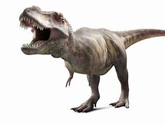
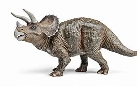
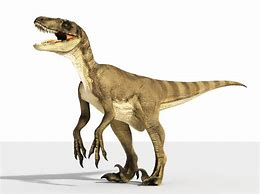
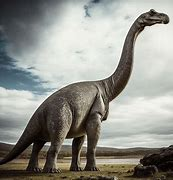

Los mejores dinosaurios del mundo
Con 5 curiosidad incluidas de cada dinosaurio
- Rex
- Mordida poderosa: Su mordida podía ejercer una presión de hasta 6 toneladas, suficiente para triturar huesos.
- Brazos pequeños pero fuertes: Aunque cortos, sus brazos podían levantar más de 180 kg cada uno.
- Vista excelente: Tenía una visión binocular mejor que la de un águila actual.
- No tan rápido: Corría a un máximo de 20 km/h, debido a su enorme tamaño.
- Plumaje temprano: Los juveniles posiblemente tenían plumas para regular su temperatura.

- Triceratops
- Tenía un gran escudo óseo que podía medir más de 2 metros de ancho.
- Sus tres cuernos probablemente se usaban más para exhibición y defensa que para luchar.
- Era herbívoro y podía masticar plantas duras gracias a su pico afilado.
- Pesaba entre 6 y 12 toneladas, ¡más que un elefante africano!
- Vivió en el Cretácico, poco antes de la extinción masiva.

- Velociraptor
- Era mucho más pequeño de lo que muestran las películas, del tamaño de un pavo.
- Tenía plumas, lo que lo hace un ancestro cercano de las aves modernas.
- Sus garras curvas en los pies eran ideales para atrapar presas.
- Era un cazador muy ágil, capaz de alcanzar 40 km/h.
- Probablemente cazaba en grupo, aunque esto sigue en debate.

- Stegosaurus
- Sus placas dorsales no eran para defensa, sino para regular la temperatura o exhibirse.
- Tenía un cerebro del tamaño de una nuez, ¡muy pequeño para su cuerpo!
- Su cola, llamada "thagomizer", tenía púas que usaba para defenderse.
- Era herbívoro y su dieta incluía helechos y cicádeas.
- Pesaba hasta 7 toneladas, pero sus patas traseras eran mucho más largas que las delanteras.
.jpg)
- Brachiosaurus
- Era uno de los dinosaurios más altos, llegando hasta 12-15 metros de altura.
- Tenía un cuello largo para alcanzar las copas de los árboles.
- Su postura era inusual, con las patas delanteras más largas que las traseras.
- Pesaba unas 50 toneladas, ¡lo mismo que varios autobuses juntos!
- No masticaba los alimentos; tragaba hojas enteras y las digería en su enorme estómago.
